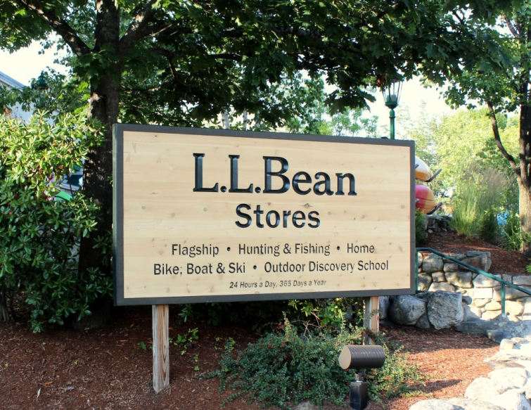
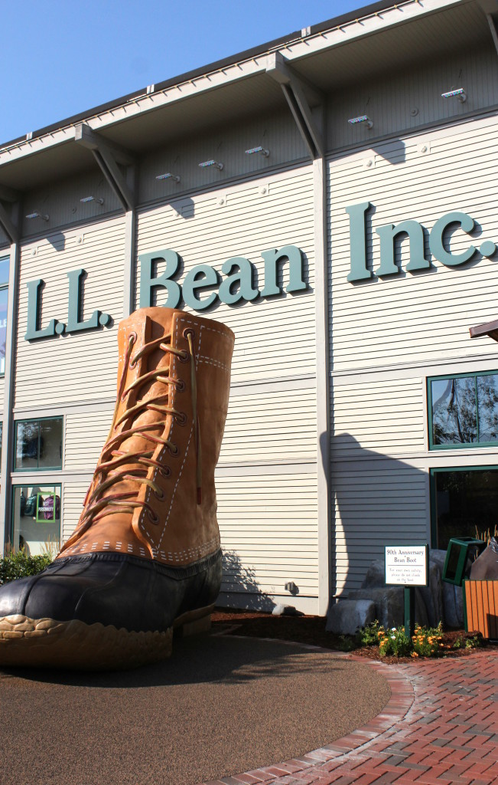

.png)
.PNG)
.PNG)
.PNG)
.PNG)
.PNG)
.JPG)
.JPG)
.PNG)
.PNG)



We are finally back on the road trip after a couple of …um….excursions here lately. 🙂  So where are we headed today?  We are leaving Perkins Cove  (remember it?) and driving north.  The inn we are headed to is a few hours away, but we are making a stop in Freeport at the L.L.Bean flagship store first.  You can’t miss it.  It’s the one with the giant boot outside!
I said we are stopping at the L.L.Bean store, but actually it is a huge huge complex (or campus as some say.)
This is just one side.
Here is another side. Â The landscaping in the area was just amazing.
 There is even a waterfall!
There is even a waterfall!
Step inside the flagship store, and you will see any and everything related to the great outdoors and even the great indoors as well. Â I loved the canoe display!
A little bit of kitchen things for you…
The flagship store had a home section, but to really see all their housewares you have to go across the parking lot to an entirely different building. Â (I told you the complex was huge!)
Voila! L.L.Bean Home Store.
The photo below shows part of the first floor of the L.L.Bean Home Store.  Needless to say, I was in heaven. 🙂  And the smell…ahhh.  You are immediately hit with a heavy scent of balsam trees.  I walked around and around trying to find a candle that was giving off that wonderful scent.  When I had no luck with that I finally asked the clerk about it, and she pointed to buckets and buckets filled with sachets of dried balsam. (I don’t know how in the world I missed them!)
There are chairs, and hammocks, and signs, and pillows….
Even buffalo check painted tables!
(No, I didn’t buy one. 🙠 )
If we had a mountain cabin, I would have wanted this table and chair set right away.
There is a second floor at the home store as well. Â I thought this hanging display was very pretty.
Here is a little closer view for you.
And then I forgot to photograph the second floor. 🙠 But here is a shot that I found online.  The second floor is for all their bed and bath linens
Just to give you another idea of how large the complex is, here is a map.
(And this does not even include the L.L.Bean Outlet that is a couple of blocks away.)
Go across the street, and you will find another Bean…Linda Bean (actually Linda Lorraine…another L.L.)  I was surprised that I did not already know about her.  She is a granddaughter of the original L.L.Bean, has a major lobster business, and oversees a brand called Linda Bean’s Perfect Maine with everything from weddings, art galleries, vacation rentals, restaurants, an inn, a catering business, and more.  One of her restaurants is located directly across the street from the L.L.Bean flagship store.
Freeport is truly a shopper’s paradise with every kind of store imaginable, and if you are an outdoor enthusiast like my husband and son, you could shop for days there!
I was so hoping to go in this one, but it was closed when we arrived there. 🙁
Again, the landscaping in the area was simply beautiful.
Here is a better view of that pergola and its garden below.
The black-eyed Susans made me jealous. Â That is exactly how I want mine to be.
So what did I buy in the town of Freeport?  Well, I bought several of those balsam scented sachets, a throw pillow for our son’s apartment (hallelujah he agreed on something decorative!!) and the cutest sugar cookies you will ever see! 🙂  (The cookies match a super thoughtful gift I received a couple of Christmases ago here.)  I’ll show you the pillow when we look at the before-and-after on our son’s tiny place.
The L.L.Bean store is normally open 24/7, but a little over a week ago, their former CEO and major head of the company who really made it take off, Leon Gorman (grandson of the original L.L.) passed away at age 80. Â They are closing the stores for half a day on Sunday while they hold a memorial service for him. Â There have only been 2 other times when the stores have been closed – for the death of the original L.L.Bean himself and for the death of President John Kennedy. Leon Gorman was an amazing man and will be very much missed by all the folks who have anything to do with L.L.Bean. Â You can read about him here.
Right before we left Freeport I snapped this photo. Â Isn’t that simply the most perfect scene with the Adirondack chairs gathered around the fire pit? Â (It just needed a fire in that pit, right?)
And finally, I have to say a huge thank you to all of you for your very kind words of congratulations on the last two posts! Â We are humbled, so blessed, and very lucky to have such fun opportunities come our way. Thank you is so inadequate.
Alright..moving on…where are we going next on this road trip?
To our inn in Maine!  How could I resist a place that had this sofa?! 🙂
It was most definitely calling me. It is in a fun, funky old hotel that I can’t wait for you to see!
Until next time…


.PNG)
I always wanted to go here and now I have:) You really detail all the places you go so beautifully. It feels like a mini vacation for me and I so appreciate it. I don’t know how you showed such restraint:) ha! If you like the balsam sachets, Susan Branch sells a balsam draft stopper on her website I have 2 and I just love them.
——————————————————————–
Too funny Charissa! You are an arm chair traveler. 🙂 Thanks for the info on the balsam draft stopper. If it smells like the LL Bean sachet, I know it must be fantastic!
Kelly
I shop LLBean’s catalogl, but now I definitely want a trip to Freeport to shop at their store! Thanks for sharing!!
——————————————————————
If you shop in the catalog, you will absolutely LOVE the store(s) Emily! They are the catalogs come to life! 🙂 You need to make plans for that trip to Freeport (and other charming towns in Maine.)
Kelly
What a great tour. I really want to go to Maine. The closest I’ve gotten is New Hampshire. I’ve got to put this on our list!
——————————————————————–
I hope you get to go there one day soon Mary Ann! It is a beautiful state. We went through a piece of New Hampshire on our trip, but I would really like to go to the Squam Lake region and stay there for a week (preferably in the house in which they filmed On Golden Pond. 🙂 )
Kelly
p.s. I cannot remember if I have congratulated you on your son’s Disney internship. If I haven’t then.. congratulations! 🙂 I know he has to be enjoying that (and working long hours as well.) Our daughter has decided she wants to go back and work for Disney in some capacity full time when she graduates in a few months – just not in Orlando (traffic there is awful.)
I love Maine and the LL Bean store is always a highlight. We try to go every other year when our NC weather is brutally hot…Camden and NE Harbor are our getaway favorites! Happy Wednesday, Kelly!!
——————————————————————–
Oh I am so glad you have had the pleasure of the store too! Isn’t it fun?! That is a great place to escape the heat in the South. Camden is coming up soon in our road trip, so I know you will recognize places there. 🙂
Happy Wednesday to you too!
Kelly
Kelly,
You’ve brought back memories for me. My husband and I honeymooned in Freeport. The flagship store has definitely changed in the 17 years since we were there. We stayed at the Harraseeket Inn just down the road from the store. It was beautiful. Thanks for sharing your road trip with us.
———————————————————————
What a fabulous place to go for your honeymoon Lynn! I bet that store has expanded considerably in those 17 years! I don’t know if the home store was even in existence as a separate shop back then. The fire pit photo near the end of this post was at the Harraseeket Inn! Looks like a nice place to stay in Freeport. I am so glad the post could bring back happy memories for you. 🙂
Kelly
congratulations on the magazine spread! I’ll keep my eye out so I can pick up a copy.
In college we used to make 10 PM road trips to LL Bean and be back in time for class the next day. The people who work at midnight were always very nice to car loads of sorority girls! LL Bean could have been our house’s official outfitter based on the numbers of backpacks, anoraks, bloucher moccasins, Bean boots and wool Nordic sweaters we all owned.
———————————————————————
Thank you Christi! I would have loved to have seen your sorority house all decked out in LLBean goods. 🙂 They should have featured it in one of their catalogs. That was probably at the time they were featured in the preppy handbook. 🙂 It gave them a BIG boost in sales when that happened.
Kelly
Maine really is beautiful. Someday, I’ll get back there. Oh..I got the Christmas Ideas magazine and I was so excited to see your beautiful home on display. Congratulations!!
——————————————————————-
Yes, Maine is really beautiful. I hope you get back there soon Debbie. 🙂 Thank you for getting the magazine! And thank you for the compliments on our home. It will be time to decorate it again before we know it!
Kelly
This post felt like we were visiting New England for real! You know how to bring things to life with your photos and writing! Would live to visit the LL Bean flagship store! When I was in Mass. my daughter and I took a road trip ( which looked like it was not far on the map!– 5 hours away!) to the Yankee Candle flagship store– and it was wonderful!! Well, worth the 10 hrs trip!! Kept looking for a moose but didn’t see one! Beautiful country side though!! Wondering what you have in store for your next adventure!?! Always such a treat!! Hope the weather starts to cool down soon so I can get in a Fall Mood! Still dreaming over your BH&G article!
———————————————————————
Oh wow! I bet the Yankee Candle store smelled like Heaven!! I would have to sniff everything in that place. 🙂 But 10 hours..oh no! No new adventure in store for awhile. My husband just returned from his adventure out west. I want a mountain trip when the leaves turn, but I am not sure my husband can take off much more for awhile.
Kelly
I too love travelling with you, since it doesn’t invlove packing and costs! 🙂 I feel like I’m right along with you, seeing all the fun stuff and tasting all the food. I hope to get to Maine some day, but not for a while, too much going on here. 🙠That store was way bigger than I could have ever imagined. I always pictured a small general store-type place for some reason! Silly me!
Thanks for a wonderful trip!
——————————————————————
Now that’s a virtual vacation if I’ve ever heard of one! Ha. I hope things settle down for you Marianne and you get a vacation to Maine sooner than you think. LLBean was the town…truly. It was to Freeport like Old Edwards Inn is to Highlands, NC.
Kelly
Sweet Kelly,
I just bought the BH&G Christmas issue. The spread on your home was wonderful I would be willing to bet that this will be their best selling issue ever, just because your wonderful home is in it. Thank you for an early Christmas gift.
As I’ve said before, every post from you is like opening a present. Thank you for all the time you invest on your blog.
——————————————————————
What a lovely compliment Becky! Thank you so very much. It HAS seemed like Christmas around here this week with the magazine coming out. (But I really need to be looking for Halloween ideas! LOL)
Enjoy the rest of your weekend. 🙂
Kelly
I have always thought it would be fun to visit that L.L. Bean store! Thank you for sharing the photos. I can’t wait for your next post! BTW, if you ever come up to the Balsam Inn, you will be smelling that wonderful Balsam aroma!
———————————————————————
It WAS fun! Be sure to allow yourself plenty of time there if you do make a trip to Freeport, Kathy. We did not have near long enough to enjoy it all. I would absolutely love the Balsam Inn on scent alone. LOL It is that smell that keeps me going back to Highlands, NC all the time. 🙂
Kelly
I knew nothing about the L L Bean Campus so thanks for sharing your trip with us. Looks like I could have spent days there. On another note, I picked up my copy of Better Homes & Gardens Christmas Ideas magazine yesterday and it was so fun seeing your home featured in the magazine. I felt like I was reading an article about my friend! I always look forward to this issue and it was more special this year since your home was featured.
———————————————————————
Yes, Jackie, you can easily spend days there! 🙂 And thank you for your sweet words about the magazine feature. I count all of you my friends, so you certainly can say you were reading an article about your friend. 🙂
Kelly
That gingham sofa has your name all over it…lol.
I too enjoy the L L Bean products and thank you for the visit there. I had no idea they are that big. What an eye opener. I think I’ll scrounge around and dig up the last catalog I got from them. I’ve been wanting to buy one of their signature totes and with your inspiration now’s the time. Enjoy your weekend.
——————————————————————
It really does have my name on it, doesn’t it?! Ha. When your new tote comes in, you should make some cookies to match the tote! (I don’t know what I am going to do with ours, but they were just too cute to pass up.)
Kelly
Kelly,
I have always wanted to visit Maine and especially the L.L. Bean store. We have several items we consider classic from their catalog. I’d love to see what all they sell at their compound.
Happy Friday.
xo,
Karen
——————————————————————–
Karen you would love it. It really requires a long period of time to see it all. So when you make your plans for your trip to Maine, definitely set aside a full day just for the LLBean complex and Freeport.(Keep adding to that travel list of yours. 🙂 )
Kelly
Kelly,
I enjoyed seeing the LL Bean store so much! Their catalog is always much anticipated by me. Love their flannel sheets!
And I did brave construction at our Barnes and Noble to pick up my copy of Christmas Ideas! It’s great.
~Ann
——————————————————————–
If you love their flannel sheets, then you should just move into the second floor of the Home Store. 🙂 It was full of beautiful things for your bed and bathroom.
And thank you for making your way through the Barnes and Noble construction for the magazine! I hope you found that it was worth the effort.
Thanks for reading and commenting Ann!
Kelly
Kelly,
I just love to e-travel with you. During the school year I don’t get to travel much except to the lake house. Then I sit and do school work while I relax by the water. Where are you going to put that wonderful smelling sachet? I can’t wait to see the pillow and how you “decorated” your sons tiny apartment. I am sure it is cozy. This weekend I am determined to get my hands on one “your issues” of the BH&G Christmas magazine. Thanks for sharing. Take care.
Dawn
——————————————————————–
I know exactly what you mean about how your life is during the school year. It is a shame how much outside of school work teachers have to carry home with them. If I can give you a vacation – even a virtual one – during the school year, then I have accomplished something. 🙂
I gave away a couple of the balsam sachets, and I really thought about leaving my one in the car just for the smell in there. But I decided to be more selfish and keep out in here in my workroom. It smells good, but not nearly as strong as the hundreds of them out in the store. Hope you have been able to find a copy of the Christmas magazine. I have seen it in numerous places around here.
Kelly
Kelly, how I missed your last post I don’t know, but congratulations on your magazine article, I’ll have to look for the magazine. Lucky you to get to LL Bean, that is my kind of store…you’re a girl after my own heart. Some day I will get there and probably drool all over the place. ha ha
——————————————————————–
Thank you for the congratulations Cheri!
You need to get to the LLBean store. It was certainly drool worthy! Beautiful place…and I didn’t even really get to look at all the clothes. (I drooled all over the Home store in the time we were there! 🙂 )
Kelly
My brother lived in Maine for 20 some years before he passed away 3 years ago and we visited LL Bean every time we went to visit him. Your pictures bring back many fond memories of those trips and time spent with him. Thank you!
———————————————————————
I am so sorry about your brother Helen, but I am glad the post could bring back happy memories for you. Going to the LL Bean store on a regular basis would be a delightful thing to do! Lucky you!
Kelly
Oh, how I would love to visit this store – compound – fantasyland! LL Bean always has such great products and wonderful service. Thanks for the tour!
——————————————————————–
I hope you do get to visit it one day soon Leslie Anne! You are welcome for the virtual tour but you need to see it in person to really enjoy the fantasyland (and bring your fantasyland bank account to buy all the things you find to love there. 🙂 )
Kelly
Hi Kelly! Thanks so much for this post. We will be in New England (from CA) in 3 weeks to view the fall foliage. My friends can’t understand why LL Bean was a must-stop on my list. Now, I can show them your post!!! Can’t wait! Thanks again!
———————————————————————
Oh wow! You are soooo lucky to be there for the fall leaves (on my bucket list for sure!) You go right ahead and show your friends the post. LL Bean is a must! I hope you are going to Stowe, Vermont too. It is also a must, and I will have a post on it in a week or so.
Jealous of your fall adventure!
Kelly
Kelly, LL BEAN is on my bucket list!! Now I am more excited than ever to visit Freeport. I picked up my Better Homes and Gardens Christmas magazine yesterday!! Your article is just beautifully presented. I may be telling people that one of my blog friends is famous.lol
———————————————————————–
Well I am so glad you are excited about LL Bean! Definitely plan some extra time for a stop there Arlene. (We should have allowed more…just like in everything we seem to do!) Thank you for the compliment on the article. Not famous at all….just incredibly lucky to have been featured. 🙂
Thank you for getting a copy and reading the article (and sharing it with your friends!)
Kelly
What a fabulous, fabulous blog post today! Isn’t Freeport the absolute fun place to visit? Did you have Ben & Jerry’s ice cream? I miss all these New England places now that I live in Virginia (not that I don’t love it here!). Quite a few years ago I was treated to a weekend at the Harraseeket Inn – what a treat – wow!!! I think only The Cloister on Sea Island GA was better. The funny thing was that L.L. Bean was so wonderful, and the other shops, restaurants, etc. so fun to explore that we spent little time in the room – ha! 🙂 We did laugh about that for a long time afterwards.
And that red hooked pillow with the three white stars!!! It’s in your pictures but not online that I could find – I might just have to call the store. (hint, hint to family & friends…birthday coming up next month) Thank you so much for your wonderful posts – this one was a true virtual visit to a wonderful town!
——————————————————————–
Thank you for your very enthusiastic comment Mari! Freeport is fantastic! I wish we could have stayed there longer. I am afraid we did not have ice cream while we were there. (We were saving room for dinner and had had a big lunch.) The fire pit in the photo near the bottom of the post was taken at the Harraseeket Inn. I would have loved to have been sitting in one of those adirondacks with a fire going there. How fun that you stayed there for a weekend! Check out this link to another site that I think has the pillow you want: http://chandler4corners.com/red-stars/
Hope that helps!
Kelly
Haha, I just realized those were cookies when I went to the former post!! How adorable they are!! Cute enough for me to comment again!! 😉 😀
———————————————————————-
That’s too funny Gina! Yes, they are adorable! I am saving them for something special…and Heaven knows I can’t ice other cookies to match them (probably should have bought a dozen!)
Kelly
I was just there Kelly!!! I wonder if we were there on the same day??!! We stopped at LL Bean on our way home to Massachusetts ater a beautiful trip to Wiscasset and Boothbay Harbor!! We were looking @ an amazing old home/Antique shop for sale in Wiscasset, Still dreaming about the possibilities!!!I feel there is nowhere more beautiful than Midcoast Maine!!! We stayed @ The Spruce Point Inn and Resort. Google it…You’ll love it!!!
———————————————————————
How uncanny is that?! We were there on the 16th of August Colleen. (It is taking me forever to get all these posts out!) We drove through Wiscasset. Did you stop at Red Eats for a lobster roll? How fun to buy and run an antique shop!! Wow! And all the fun shopping you could do to keep it stocked. Now you have ME thinking about it! ha. 🙂 Your inn looked fabulous!! I would definitely want to stay in the inn part of the complex. I am adding it to my list for future Maine trips. Thanks for the recommendation!
Kelly
I love LL Bean! How fun to be able to go to their flagship store. What cute little sachets too. The area looks like a great place to shop. I love meandering through complexes like this. 🙂
——————————————————————
It was a fun place to stop. Gina you would love it. Not to mention all the great little places to eat all around it!
Kelly
I love it! Maine is on my bucket list but it’s great to get to visit vicariously for now. That L.L. Bean Home store looks wonderful.
———————————————————————
Julie, Maine should be on everyone’s bucket list. 🙂 And when you do go, I hope you find time a day to shop at the LL Bean store. Save room in your car for all your purchases!
Kelly
I WANT TO GO. I’ve never been to Maine.
How could you resist not buying EVERYTHING????
Thanks for the tour.
—————————————————————–
Kaye Ann, you need to plan a trip to Maine. It is a wonderfully beautiful state.
I had a very hard time resisting a lot of the things we saw in the LL Bean store, but I had already gone over my budget by quite a bit in doing our son’s apartment..so I had to reign in my spending on that part of our trip. 🙁
Kelly
That sofa. Oh my! I can not wait to see the inn, but oh how I have enjoyed the tour of LLBean. That is truly one of my favorite places. I still love to get the actual catalogs in the mail. I loved the cookies. I got on a Vera kick for all my school bags many years ago. It is hard not to love all those pockets, but my first teaching bag was a LLBean tote. I truly loved it.
I may have to put visiting Freeport on my bucket list.
———————————————————————–
That sofa AND the inn where it lives are really something! I am trying to catch up on blog comments and emails before showing all of you the next post with the inn. I’ve got to get faster at this! I think those LL Bean totes last forever. They are so sturdy!
Kelly